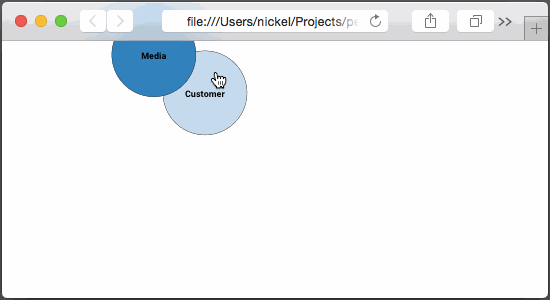

Future of Retail: Collapsible Force Directed Graph
The following is a proposal of work for constructing a collapsible force-directed graph illustrating relationships between future retail concepts.
At the estimated effort level and rate detailed below the total cost to Westfield will be $1100.

Figure 1: Demonstration
Work
The task is to use a force-directed graph with collapsible interior nodes to establish relationships between future retail concepts while enabling exploration within the confines of a browser window.
The following work will be undertaken:
- ~10hrs, force-directed graph construction
- ~10hrs, testing and debugging
- ~2hrs, deployment
For a total of approximately 22 hours of work.
Tools
The primary tools will be web technologies for broad reach, accessibility and rapid prototyping:
- HTML
- JavaScript
- CSS
- http://d3js.org/
d3 is a rapidly becoming the industry standard for data visualization on the web. It mixes a simple API with standard templates to make quick work of data visualizations.
Artifacts
The output of the proposed work will be a hosted website viewable in modern browsers. This includes the following:
- single page force directed graph constructed with d3.js
- publicly hosted website, handoff to Westfield
- git repository tracking the history of source code changes
Modern browsers to be tested:
- Desktop Chrome, Latest
- Desktop Firefox, Latest
- Desktop Internet Explorer, 10
- Desktop Safari, Latest
- Mobile Safari, Latest
- Chrome for Android, Latest
Rates/Cost
My normal rate for front-end consulting is $200/hr. Since this would be my first project for Westfield and due to my relationship with the project participants I will discount my rate to $50/hr.